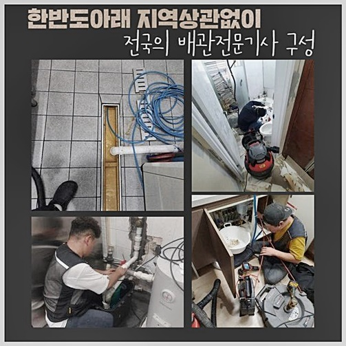
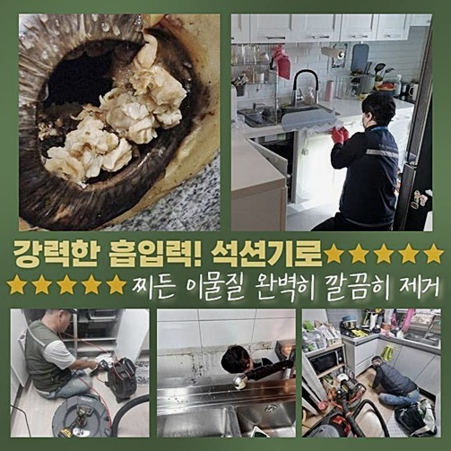
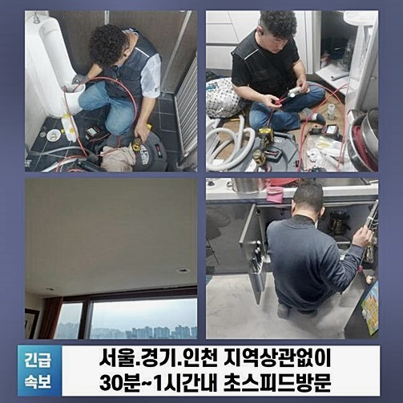
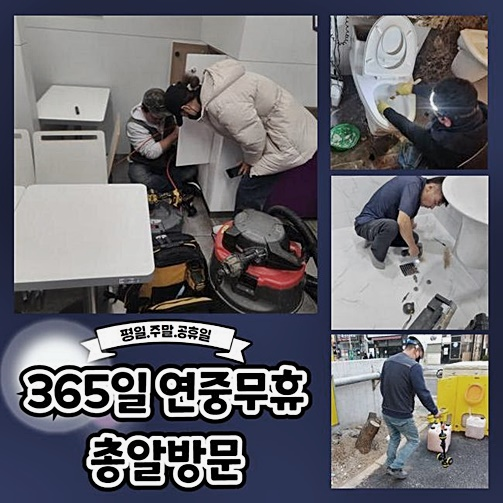
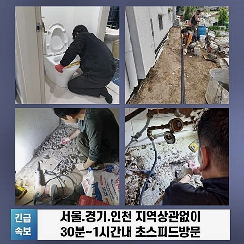
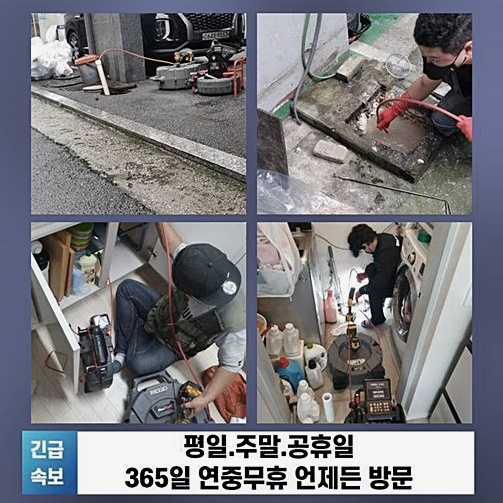

🏠 종로 계동변기역류 창신동 누수탐지공사
용인 변기막힘 전문 시공 후기

📋 작업 개요
- 위치: 용인
- 서비스 유형: 변기막힘, 하수구막힘, 배관막힘, 누수수리, 역류해결, 뚫는업체, 배관청소, 고압세척, 설비공사
- 작업 일시: 2024. 6. 26. 19:19
- 업체명: 하수구수사대 (010-5615-2118)
🔍 문제 상황
종로 계동변기역류 창신동 누수탐지공사
건물과 연관없이 물들이 이용되고 있다라면 배수장애는 때에 상관없이 야기될 수 있죠
막혀버리는 사태가 야기되는 기조는 하수구 깊은곳에 자리잡은 슬러지들을 대표적으로 꼽습니다
하수가 내려갈때나 리모델링 등을 실시할 때 관로로 찌꺼기가 지속적으로 투입되는 현상이 벌어지므로 일상중에 청소를 알맞게 안하면 증상들이 겉으로 드러날 수 있죠
이런저런 문제들이 발생되게되면 배출되는 유속이 단순히 관찰해도 느려지게 되며 기본적 생활양식에도 어려움들을 겪으면서 설비를 쓰고자 할때도 악영향을 초래시킬 가능성들이 높을 수 밖에요
상가에 입점하고서 주된 행위로서 영업들을 하신다라면 경제측면의 손해가 막대해지니 주의들이 있어야한다고 강조드리고 싶어요
이제부턴 저희전문진이 청소를 이어간 주차장스팟의 장소를 보며 하수시스템오류는 어떻게 고쳐내는게 알맞은건지 간단히 설명드리는 시간들을 마련해보았어요
배수구로 잔해물이 흘러가지못하게 신경써준다면 하수시스템 오류는 원만하게 막을 수 있습니다

🔎 원인 분석
💡 전문가 진단: 정밀 진단 장비를 사용하여 슬러지의 고착 여부를 판명하고 타격/세척 작업을 실시했습니다.
그리하여 여러분들은 쓰고계신 장소의 하수구의 크기들을 파악해보고 알아낸 값과 알맞는 크기들의 거름망제품을 구비하시는것인데요
망들을 설치하면 잔해가 투입되는 것은 대체로 방지해주는 기능으로 작용하며 배수장애 문제때문에 불미스러운 일을 완화시킬 수 있습니다
세밀한 거름망용품을 준비하거나 요목조목 신경써줬지만 예상치못한 증세가 발생되었다면 조속히 전문가들을 부른 뒤 배수관에서 누적된 잔해를 사라지게끔 해야되는데요
그러나 증세를 인지하였지만 이렇다할 영향들을 주는거같지않다고 생각하셔서 대응을 안하시는 고객분들이 대다수라고 볼 수 있고 금일에도 막중하지않은 상황으로 시작하여 물이 솟는 현상들을 보이고서 전체에 걸친 진단을 원하셨습니다
문제마다 써야되는 장치들이 차이를 보이기에 저희들은 제대로 된 작업들을 위하여 업체에서 준비한 장비들을 가지고 달려간답니다
당도 후 우선적으로 증세가 불거진 배수구의 점검을 수행해요
레버를 올린 뒤 하수관으로 빠지는 속도들을 체크해보는 과정들로 결론은 배수속도들이 확실하게 느려졌고 하수구 깊은곳에 고인 오물이 밖으로 배출되는 현상까지 보았습니다
역류마저 발생되었다면 공동배수관에 찌꺼기가 집중되어 자리할 가능성들이 농후하고 이것들을 없애주려면 내시경을 사용하여 문제의 구간을 조속하게 체크하는게 먼저죠

🔧 작업 과정
내시경의 경우 문제의 시발점을 체크할 수 있고 잔해의 특성들도 알수있어서 원만하게 할수있게끔 도움을 주는 장치라 알고계시면 된답니다
가벼운 절차처럼 보일지라도 반드시 필요한 수순이므로 전문가에게 도움을 청할때 내시경장치를 이용한 뒤주어 검수들을 선제적으로 가져가는지 유무들을 세심히 따져볼것을 권해드립니다
마침내 수리를 수행해보니 예상대로 메인배수관부터 특정한 위치 뿐만아니라 이런저런 이물질들과 석회성분이 퇴적된 걸 알 수 있었습니다
오래도록 세척이 진행되지 못한 이유로 샤프트기를 사용하여 시공을 하는것 외에 고압수청소로 비로소 청소가 필요했습니다
고압노즐분사 방식은 긍정적으로 경제적 지출이 발생되는 것은 맞으나 증상들이 생겨나는 시점마다 업체의뢰를 통하여 지속적인 해결에 힘쓰는것보단 좋은 작업이라고 볼 수 있어요
하수관의 지름과 맞아떨어지는 노즐들을 고정시켜 세척 작업들을 수행하면 배수관을 매립시킨 때와 동일하게 복구시켜주는 효과들을 경험하게됩니다
세척 시공을 진행시에 무분별하게 강력한 물리력을 쓰기보단 구간을 잘 살펴 세기를 조정시켜야됩니다
배수관은 각기 다른 내구성들로 이뤄져있기에 무작정 청소를 강행한다면 손상들을 야기시킬 확률이 상당해요
저희의 경우 지금까지의 경험들로 각별히 신경써야되는 사항들을 원만하게 숙지하고 있으며, 본격적인 시공을 실시이전의 선행으로 배수관의 특수성을 올바르게 인지하고 세심하게 시공을 시행해주고 있어요
세척 청소를 해줄땐 내부에 있던 이물들이 흩뿌려질 확률이 상당하므로 비닐들을 써서 주변부를 보호한 뒤에 바로 잡아야되는게 좋으며,
오늘처럼 천장라인에 메인관로가 설치되어 있으면 초입부분들을 찾기보단 특정 부위를 찾아서 구멍들을 뚫은 뒤 분사부를 투입시키는것이 합리적인 방법이라고 강조드리고 싶어요
배관청소가 종료되었으면 타공된 부위들을 깔끔히 마감시켜드리며 비산된 이물들은 쓰레기봉투 등에 폐기해 청결하게 마무리하니 불안해하지 않아도 되요


✅ 작업 완료
하수구 증세가 생기는 바람에 작업의 시점을 보내버린다면 갑작스레 규모가 늘어나며 전체적인 시스템에 안좋은 결과를 초래합니다
가령 하수관이나 배수구를 쓰는 시점에 가볍다고 해도 하수구문제들이 발생된 걸 보신 경우라면 즉각 전문가에게 도움을 청해야 하는데요
막혀버린 배수구를 안전하며 서둘러 해결시키는 훌륭한 전문해결인을 찾고 있다면 즉각 저희의 전문인들과 풀어나가봐요!
전문적 장치와 노하우를 초고로하여 고객의 고민을 조속하게 해소할 방법들을 제시할것을 이 자리에서 약속드리니 질의사항이나 해결이 필요하면 언제라도 저희에게 연락하시길 바라요




⚠️ 베란다 누수 및 방수 관리 방법
- ✅ 비가 많이 올 때 창틀 주변이나 아래층 천장에 얼룩이 생기는지 정기적으로 확인해 보세요.
- ✅ 우수관 주변 실리콘 마감이 들뜨거나 깨진 틈새가 있는지 손상 여부를 수시로 체크하세요.
- ✅ 베란다 바닥 타일의 줄눈(메지)이 소실되면 그 틈으로 물이 침투하여 누수가 유발됩니다.
- ✅ 누수 의심 증상 발견 시 방치하면 아래층 손실이 커지므로 즉시 전문가의 진단을 받으십시오.
💡 핵심 정리
- 확실한 장비 작업(내시경 점검 및 샤프트 스케일링)으로 원인을 뿌리 뽑습니다.
- 작업 후 1년 이내에 동일한 부위 재발 시 100% 무상 A/S 서비스를 보장합니다.
- 서울 · 경기 · 인천 전 지역에 24시간 언제든 긴급 출동할 수 있도록 항시 대기 중입니다.
❓ 자주 묻는 질문 (FAQ)
🚨 용인 변기막힘 문제로 고민이신가요?
정확한 원인 진단과 확실한 시공으로 재발 없는 해결을 약속드립니다.
24시간 긴급 출동 | 서울 · 경기 · 인천 전지역 | 1년 내 재발 시 무상 A/S